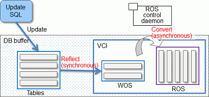
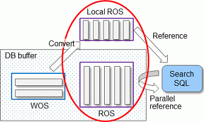

FUJITSU Enterprise Postgres provides the in-memory feature, which uses columnar index and memory-resident data. This reduces disk I/Os and enhances aggregation performance.
Note
This feature can only be used in Advanced Edition.
Many aggregation processes may require a large portion of data in a particular column. However, traditional row data structure reads unnecessary columns, resulting in inefficient use of memory and CPU cache, and slower processing. FUJITSU Enterprise Postgres provides a type of columnar index, VCI (Vertical Clustered Index). This addresses the above issues, and enhances aggregation performance.
VCI provides the following benefits:
Minimizes impact on existing jobs, and can perform aggregation using job data in real time.
Provided as an index, so no application modification is required.
Stores data also on the disk, so aggregation jobs can be quickly resumed using a VCI even if a failure occurs (when an instance is restarted).
If the amount of memory used by VCI exceeds the set value, aggregation can still continue by using VCI data on the disk.
It also provides the features below:
Disk compression
Compresses VCI data on the disk, minimizing required disk space. Even if disk access is required, read overhead is low.
Parallel scan
Enhances aggregation performance by distributing aggregation processes to multiple CPU cores and then processing them in parallel.
The following features keep VCI data in memory and minimize disk I/Os on each aggregation process.
Preload feature
Ensures stable response times by loading VCI data to memory before an application scans it after the instance is restarted.
Stable buffer feature
Reduces disk I/Os by suppressing VCI data eviction from memory by other job data.
Purposes of this feature
This feature has a data structure that can efficiently use the newly added resources, and aims to enhance the existing aggregation processing in normal operations to be faster than parallel scan. It shares the same purpose of enhancing aggregation performance with the parallel scan feature that is provided separately, but differs in that it speeds up nightly batch processes by utilizing available resources.
VCI architecture
This section briefly explains VCI architecture as it contains basic terminology required, for example, when setting parameters.
Update and aggregation operations to enable real time use of job data are described.
VCI has write buffer row-based WOS (Write Optimized Store) in addition to the columnar data structure ROS (Read Optimized Store). Converting each update into a columnar index has a significant impact on the update process response times. Therefore, data is synchronously reflected to the row-based WOS when updating. After a certain amount of data is stored in WOS, the ROS control daemon asynchronously converts it to ROS. As above, the entire VCI is synchronized with the target table column, minimizing update overhead.

The same scan results can be obtained without a VCI by using WOS in conjunction with ROS. More specifically, WOS is converted to Local ROS in local memory for each aggregation process, and aggregated with ROS.

See
Refer to "Installing and Operating the In-memory Feature" in the Operation Guide for information on installation and operation of VCI.
Refer to "Scan Using a Vertical Clustered Index (VCI)" in the Application Development Guide for information on scan using a VCI.